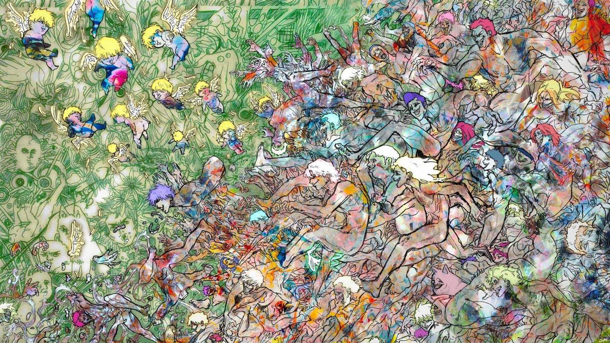

Escape the Anthropocene
Illustration • 2026

Artist Statement
In the world of art, a drawing can be used as a tool to depict the complex realities of our time. In this piece, there is a mob of people running forward, breaking apart into pieces as they fall, symbolizing our society hurtling towards an uncertain and perilous future - the Anthropocene.
This epoch is marked by humanity’s transformative influence on Earth’s geology, ecosystems, and ultimately, our own well-being. At first glance, the chaotic swarm of individuals rushing forward may seem like a pursuit of progress and prosperity, but as they fall and disintegrate, it becomes clear that this frenzied march represents the darker side of human progress. Limbs and senses shattering symbolizes the harmful consequences of our relentless pursuit of economic growth, technological advancement, and resource exploitation.
The metaphor extends to the children with wings who rise above the chaos. They represent a hopeful escape from the dire consequences of our actions. Untouched by the corrupted norms of society, they aspire to soar freely and break free from the shackles of conformity. However, they face resistance - symbolized by the hands reaching out from the mob, trying to pull them back down.
The uniformity of the children’s appearance speaks to the homogenization of society under the Anthropocene. The pressure to conform and fit within rigid societal moulds can lead to a loss of individuality and diversity, creating a world where everyone strives to be “normal” and similar.
Ultimately, this artwork serves as a call to action - urging us to recognize the consequences of our actions and work collectively to navigate the Anthropocene towards a more sustainable, equitable, and harmonious future.